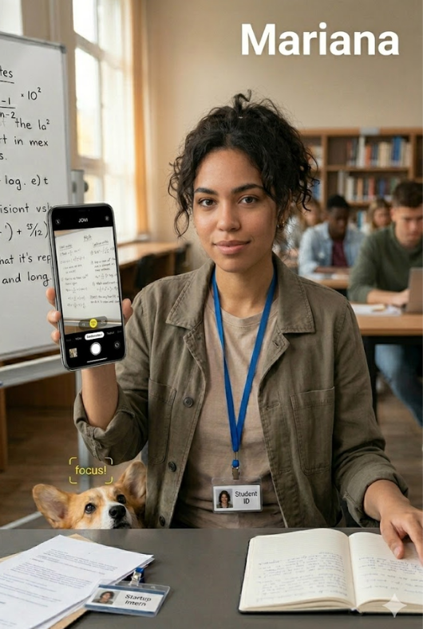
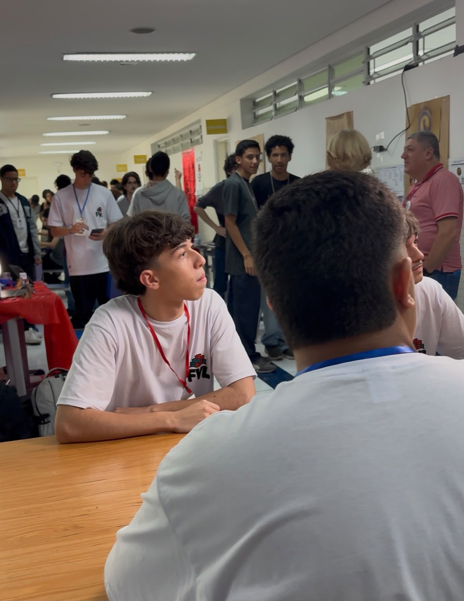

O conteúdo não espera
Slides, documentos e anotações precisam ser capturados antes que a oportunidade passe — sem uma etapa extra de configuração.
Uma câmera inteligente que entende o contexto antes mesmo de você apertar o botão.
Na rotina de estudos, uma lousa pode ser apagada em segundos. Em vez de procurar foco, brilho e modo de captura, estudantes precisam registrar com clareza no primeiro toque.
Slides, documentos e anotações precisam ser capturados antes que a oportunidade passe — sem uma etapa extra de configuração.
Baixa iluminação, reflexos e foco impreciso deixam textos distantes borrados ou escuros, comprometendo a leitura depois da aula.
Interfaces cheias de botões exigem conhecimento técnico justamente quando o usuário só quer abrir a câmera e confiar no resultado.
O desafio não é ensinar fotografia: é fazer a tecnologia entender o contexto e entregar uma imagem nítida, legível e pronta para usar.
Cada solução da JOVI ataca uma etapa da rotina: o AdaptAI aprende os hábitos do usuário e adapta a câmera automaticamente, o Smart-Pop recomenda o modo certo sem exigir configuração, e o JoviEdu transforma o registro em conteúdo pronto para estudar.
Entre uma aula, o estágio e o próximo deslocamento, cada registro precisa acontecer no tempo certo. As nossas soluções entendem que essa rotina não oferece uma segunda chance, por isso elas ajudam a transformar lousas, slides e documentos em imagens nítidas antes que o conteúdo desapareça.

Mariana, 20
Universitária e estagiária em grandes centros urbanos.
“Eu não quero aprender a configurar uma câmera. Quero salvar o que importa, com clareza, na primeira tentativa.”
Uma visão da experiência que une inteligência contextual, interface minimalista e recursos pensados para a rotina real.
Experiência JOVI
Uma câmera preparada para entender o que está diante dela e entregar um registro mais claro.
Contexto
Recomendações contextuais sem poluir a tela.
Estudo contínuo
O que foi capturado pode continuar sendo consultado, organizado e compreendido.
A tecnologia considera o ambiente antes de sugerir o próximo passo.
Menos controles visíveis para que a captura aconteça sem complicação.
JOVI Edu amplia o valor da foto depois do momento da captura.
Cinco integrantes, diferentes responsabilidades e um mesmo objetivo: transformar a câmera em uma experiência mais inteligente.
Função: Desenvolvedor Python / Analista de Requisitos
Responsável pelo desenvolvimento do JoviEdu, plataforma integrada com IA que torna os conteúdos acadêmicos capturados pelo público alvo em material mais facilmente digerivel, além de desenvolver o backlog, requisitos e diagrama de caso de uso da solução
Função: Front-end / Desenvolvedor Python
Atuou no front-end, foi responsável pelo desenvolvimento e estruturação completa da Landing Page, além da criação e prototipagem dos mockups das soluções — AdaptAI, Smart-Pop e JoviEdu. Em Python prestou suporte à construção e implementação das funcionalidades do JoviEdu.
Função: UX Design / Front-end
Contribuí para a otimização da ideia e desenvolvimento visual do projeto JoviEdu, auxiliando na clareza das soluções e na definição das funções do “cérebro” central da aplicação.
Função: Desenvolvedor Python / Documentação Técnica
Atuou no desenvolvimento e organização do projeto, contribuindo na elaboração do backlog e definição do escopo, além da criação de diversos documentos de software. Responsável também pelo desenvolvimento e aprimoramento de códigos em Python, implementação e testes das funcionalidades.

Função: Pesquisa & Análise de Mercado
Responsável por pesquisas no geral, tanto sobre câmeras e tecnologias similares, análise do mercado e identificação do público-alvo, buscando informações que contribuam para o desenvolvimento e posicionamento do projeto JOVI.
Quer conhecer melhor a proposta, conversar sobre a solução ou acompanhar o projeto? Fale com a equipe da Drakon.